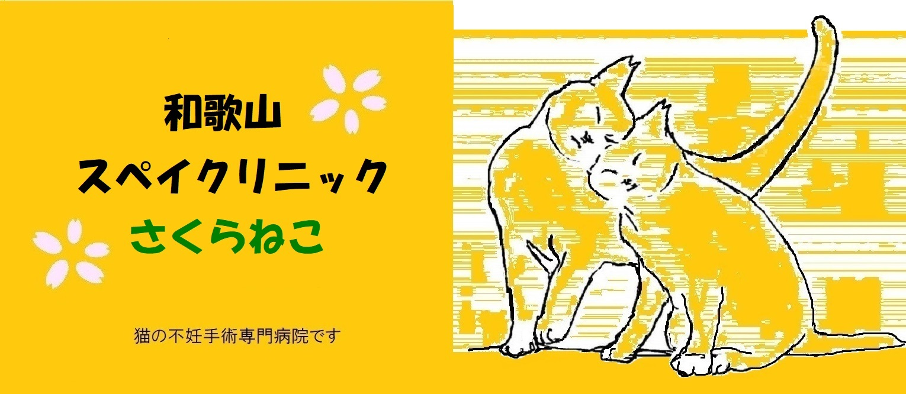

※ 当院は猫の不妊手術専門病院です。一般の診療は行っておりません。
当日ご予約無しでの手術は割増料金が発生します。→「手術の流れと注意点」をご参照下さい。
混雑時には外猫の手術を優先する事があります。ご了承ください。
ご予約はできるだけ(月)～(木)の平日でお願い致します。
日曜ご希望の場合は割増料金がかかる事があります。 (例外あり)
ご来院の際には洗濯ネットに入れて来るようにお願い致します。
ペットショップで購入された猫、又は血統証付きの猫に関しては基本お引き受けしておりませんが、多頭飼育問題の際にはご相談下さい。
ご予約や手術の流れはお電話で説明致します。まずはご連絡下さい。
（飼い猫は日帰りとなります。外猫は状況によって前泊可能です。）
連れて来られる際の入れ物はプラスチック製のハードキャリーまたは捕獲器でお越し下さい。
捕獲器を剥き出しのままので来られると、猫は大変怯えます。生地などで覆ってお越し下さい。
・飲水の制限はありません。
・食事の制限はシビアではありませんが、朝は沢山食べない様にご注意下さい。
※ 手術料金には、ノミ駆虫薬、化膿止めの抗生剤 及び、術後の 皮下補液 も含まれております。(一部例外)
★ 耳カット(耳先のＶ字カット)は不妊去勢手術を受けた証
もう子猫を増やすことはありません。
手術中（主に午前中～昼くらい）の為電話に出られない事があります。
ご予約ご用件のメッセージを留守番電話にお伝え下さい。
なるべく折り返す様に致しますが、連絡が無い場合、再度ご連絡お願い申し上げます。
※ お電話は上記の通り、午前中は主に留守番電話に切り替わる事が多いです。
5/4(月)～5/11(月)まで休診いたします。ご了承下さい。